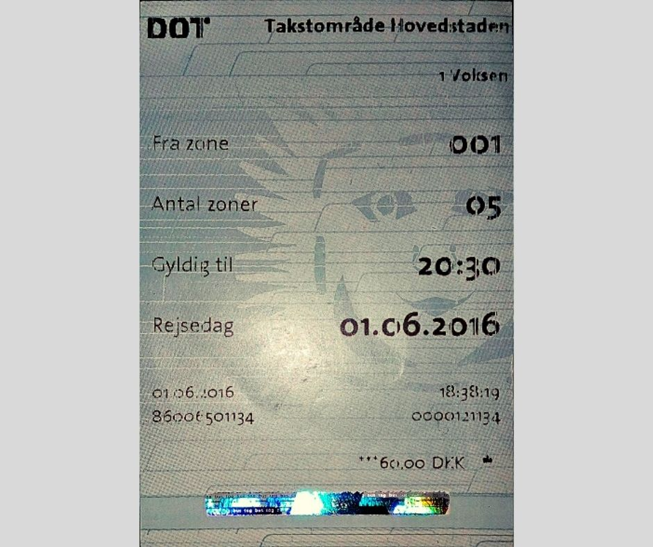
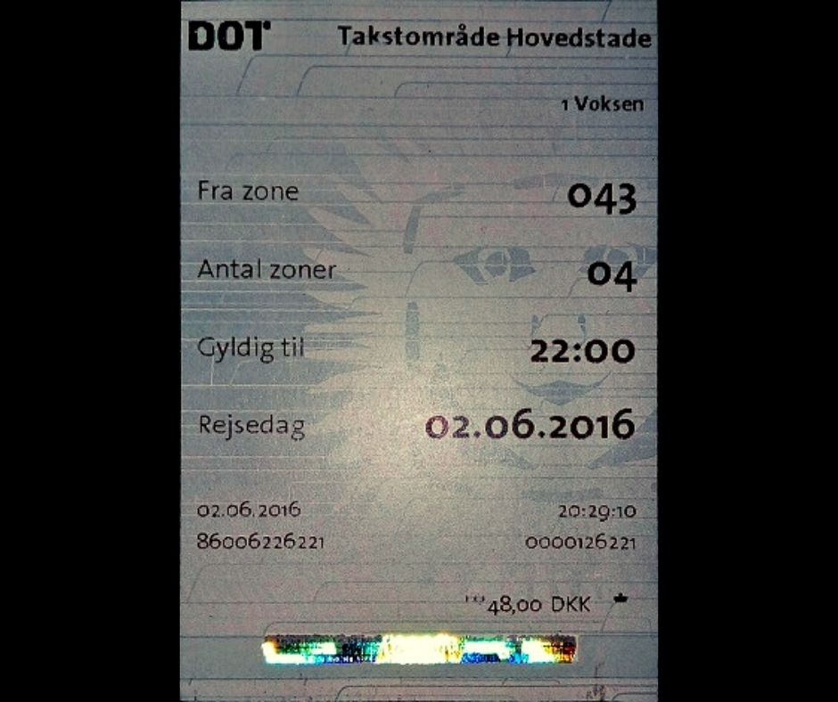
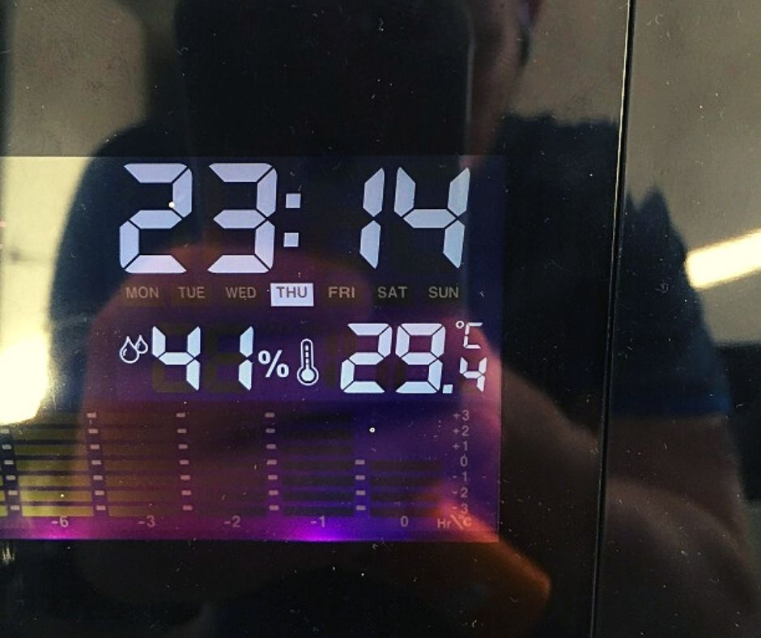

Afleverede nedenstående til sygeplejerske "Resting bitch face" i dag efter min samtale med hende og “Russeren”.
Status - Lægesamtale 1. august 2019
Som jeg flere gange tidligere har fortalt “Russeren”, så lider jeg hver dag under manglende evne til at fokusere eller fordybe mig i noget. Jeg har et habituelt opmærksomheds- og koncentrationsbesvær der i min nuværende situation gør det umuligt for mig at foretage mig noget meningsfuldt, endsige noget der vil kunne få mig i beskæftigelse igen. Jeg har været nødt til at takke nej til to konkrete jobtilbud, “CC” og “SF”, som følge heraf.
Min hverdag er præget af ulidelig kedsomhed, rastløshed og ruminationer over min uholdbare situation. Jeg er nødt til at træne intensiv styrketræning hver eneste dag, for at kunne holde ud at eksistere Det ødelægger min krop, således at jeg får kroniske overbelastningsskader i skuldre, albuer og lænderyg. Disse smerter behandler jeg med Ipren på daglig basis, som giver mig mavesmerter og halsbrand, men hvis jeg ikke træner, overlever jeg ikke på kort sigt, så jeg bliver ved med at tage dem.
Jeg har kronisk søvnbesvær, idet jeg vågner flere gange hver nat og ofte er vågen flere timer. Jeg har intet at stå op til, så jeg prøver at sove så længe som overhovedet muligt. Derudover prøver jeg at sove i løbet af dagen. Et af få tidspunkter, hvor jeg ikke har det dårligt på er, når jeg sover.
Eneste lyspunkt, udover træningen, er at jeg har dagligt kontakt med andre mennesker i form af mit netværk. Jeg opsøger dem og de opsøger mig. Jeg har både tætte og faste relationer i form af mine barndomsvenner, samt fået nye venner som jeg vedligeholder kontakten til. Jeg har ingen som helst problemer i social henseende, og har aldrig haft det. Mine pårørende er dybt chokeret over, hvordan jeg bliver og er blevet behandlet, og de forstår ikke at psykiaterne ignorerer deres henvendelser, når de forsøger at hjælpe mig.
Mine pårørende er dybt chokeret over, hvordan jeg bliver og er blevet behandlet.
Lægesamtale med “Russeren” den 28. juli 2019
Jeg havde endnu engang lægesamtale med “Russeren”. Han fortsatte med udelukkende at forholde sig til “Oraklets” fejlkonklusion. Da han tilsyneladende godt kunne se, at jeg ikke var psykotisk, besluttede han sig for at fremføre en anden forklaring på min adfærd, nemlig personlighedsforstyrrelse i form af svær narcissisme. Han kunne på forespørgsel ikke forklare mig, hvordan denne narcissisme kom til udtryk på, kun at det var noget en psykolog fra “Oraklet” havde konkluderet på baggrund af en Rorschach-test.
Jeg forklarede ham, at der intet var i min adfærd, der talte for at jeg skulle lide af narcissisme, og at virkeligheden havde større vægt end en to og et halvt år gammel fejlkonklusion, det havde taget en psykolog fem timer at udarbejde. Jeg forklarede ham yderligere at man ikke rent fagligt kunne stille en personlighedsforstyrrelsesdiagnose, når man led af en svær belastnings- og tilpasningsreaktion, som jeg gjorde og havde gjort det. Det ville “Russeren” dog ikke forholde sig til.
“Russeren” forholdt sig slet ikke til det faktum, at jeg igennem hele perioden havde været i behandling med medicin mod angst og depression. Det i sig selv ville selvfølgelig også besværliggøre at stille en personlighedsforstyrrelsesdiagnose. “Russeren” ignorerede ikke bare virkeligheden, men han udvalgte også bevidst det han kunne bruge og ignorerede alt andet. Han forholdt sig ikke til hvad jeg havde skrevet eller fortalt ham. Han ignorerede at "Hilfspolizei" på "Medicinsche Polizeis" foranledning havde ransaget mig fem gange, i alle tilfældene uberettiget, samt især hvilken svær negativ betydning det havde haft for mig.
Konklusion på samtalen med “Russeren”
Igen nægtede “Russeren” at udføre en simpel test der kunne fortælle om jeg led af ADD, selv om der i allerhøjeste grad var indikation for at udføre denne test. “Russeren” hverken forholdt sig til det jeg havde skrevet, eller lyttede til det jeg sagde.
Han havde slet ingen forståelse for min situation og reaktion. Men hvordan skulle han også have det? Hvor mange gange er “Russeren” blevet uberettiget tvangsindlagt? Hvor mange gange er hans hjem blevet ransaget af politiet som følge af en falsk anklage? Er “Russeren” blevet smidt på gaden og har han mistet alt? Har “Russeren” mistet enhver realistisk mulighed for at stifte familie eller gøre karriere? Har han mistet sin ph.d. fordi han gjorde opmærksom på hans vejleders ("Svindellægen") ulovlige praksis? Har han mistet retten til at blive speciallæge, som følge af førnævnte? Nej, og jeg kunne blive ved.
Men har jeg i grunden brug for at “Russeren” evner at sætte sig i mit sted? Overhovedet ikke. Det, jeg har brug for, og hele tiden har haft brug for, er en fremtid og en tålelig tilværelse. Og det forhindrer bl.a. “Russeren” desværre.
Det er svært stigmatiserende og psykisk belastende at blive uberettiget sygeliggjort
Det er mentalt udmattende hele tiden at skulle virkelighedskorrigere uforberedte og fagligt underlødige psykiatere, men jeg har desværre ikke noget valg. Jeg er nødt at tilbagevise diverse falske påstande. Ikke fordi jeg isoleret set bekymrer mig over hvad psykiatere mener, men fordi det er svært stigmatiserende og psykisk belastende at blive uberettiget sygeliggjort.
Hvad angår det sludder om, at jeg skulle lide af en personlighedsforstyrrelse, så gælder det at:
Man kan ikke diagnosticere en personlighedsforstyrrelse, hvis man i forvejen er udtalt påvirket af en svær belastnings- og tilpasningsreaktion, som jeg var og er. Det er jeg, som følge af påtvungne og katastrofale livsomstændigheder. Ikke fordi jeg er psykisk sårbar, for det er jeg ikke, hverken som følge af nogen personlighedsforstyrrelse, psykose eller andet.
Den eneste årsag til at jeg har gjort hvad jeg har gjort, har været desperation over de helt uholdbare og eksistenstruende livsomstændigheder som styrelsen og "Den praktiserende læge" er direkte skyld i.
Man kan ikke diagnosticere en personlighedsforstyrrelse hvis man i forvejen lider af en depression, som jeg lider og led af.
Man kan ikke diagnosticere en personlighedsforstyrrelse ud fra en Rorschach-test, der er en pseudovidenskabelig og fornuftsstridig test fra 1921, hvis brug er stoppet i mange lande, som har en yderst ringe reliabilitet og validitet, og hvis resultat for et normalt individ kan findes på internettet.
Rorschach-testen, som altså er en test hvor man vurderer en persons tolkning af udtværede blækklatter, er sjovt nok især usikker når det drejers sig om at diagnosticere narcissisme, og den hører til på historiens mødding, som den uvidenskabelige anakronisme den er.
Hvis man er uenig i en psykiatrisk eller psykologisk diagnose, er det i sig selv ikke en beskæftigelse på at man lider af den.
En psykolog kan selvfølgelig ikke diagnosticere en personlighedsforstyrrelse på de fem - seks timer vedkommende havde til rådighed.
Når virkeligheden er i klar modstrid med en diagnose, må man forkaste den pågældende diagnose. Det gør man ihvertfald i rigtig lægevidenskab.
Både psykologen og psykiateren på Retspsykiatrisk Klinik har altså tilsidesat al faglighed og moral, og klinikken er som institution således utroværdig i min optik.
Når ovenstående er sagt, så er jeg glad for at man stillede en så forkert diagnose som narcissisme, for det gør det meget lettere for mig at tilbagevise. Især fordi jeg har optaget alle samtalerne på Retspsykiatrisk Klinik.
Enhver rigtig læges pligt er at vurdere en given patient som vedkommende til enhver tid fremstår. Hvis man ukritisk viderefører en fejldiagnose, som “Russeren” gør, er det uprofessionelt og farligt for patienterne.
Men hvad er det som "Den praktiserende læge" og "Medizinische Polizei" har ødelagt, og som har gjort mig så desperat?
- De har gjort det stort set umuligt at stifte familie, endsige finde en kæreste - i en periode på fire år.
- De har taget det fra mig som jeg har tilsidesat alt for, som jeg har arbejdet utroligt hårdt for, og som betød alt for mig: lægefaget.
- De har chikaneret mig og min familie med fem fuldstændigt uberettigede ransagninger.
- De har givet mig en fejldiagnose der har stigmatiseret mig og ødelagt mit liv og min fremtid.
- De er skyld i den tortur der var - og fortsat er - nu på fjerde år at gå rundt i ulidelig uvidenhed og lediggang.
Uanset hvad jeg iøvrigt har sagt, så har "Den praktiserende læge" og "Medizinische Polizei" skadet mig uendeligt mere end jeg har skadet dem - og de begyndte. De skulle have grebet det helt anderledes an, men de valgte at lade være, til uoprettelig og svær negativ skade for mig.
Fejldiagnosen har resulteret i at jeg igennem måneder er blevet truet med tvangsmedicinering med vold og magt af "Den fremtrædende psykiater" og "Klinikchefen". Vel og mærket tvangsmedicineret med medicin der beviseligt har adskillige bivirkninger, hvoraf mange er livsfarlige og alt andet end sjældne. Jeg var tydeligvis ikke psykotisk og hverken "Den fremtrædende psykiater" eller "Klinikchefen" var i stand til at forklare hvorfor jeg skulle være psykotisk. Derfor var det ikke indiceret med den farlige medicin.
Der er selvfølgelig meget, meget mere, men da jeg véd at de fleste psykiatere er dovne, forudindtagede og ikke gider sætte sig ind i sammenhænge, der er mere end helt banale, vil jeg spare mine begrænsede mentale ressourcer til den bog, jeg er i gang med. Jeg har givet psykiaterne talrige muligheder for at prøve at forstå mig, men de nægter beklageligvis kategorisk.
"Den praktiserende læges" fejldiagnose
Jeg har flere gange bedt psykiaterne om at forholde sig til "Den praktiserende læges" fejldiagnose, og hendes tvangsindlæggelse af mig på røde papirer, som har vist sig at være uberettiget og et overgreb, men man har desværre nægtet at forholde sig til virkeligheden indtil videre. Det har jeg bogstaveligt talt lidt under hver eneste dag i omkring fire år, og det har haft fuldstændigt uoverskuelige negative konsekvenser for mig og min familie. Det har jeg redegjort for andet steds, hvorfor jeg vil undlade det her.
Jeg har i mit sidste dokument tilbagevist de væsentligste punkter i "Den praktiserende læges" tvangsindlæggelsesprotokol. Da jeg dog først for ganske nylig, den 19. juli 2019, efter to og et halv år har fået tilbageleveret det IT-udstyr der ved fem ulovlige ransagninger blev taget af politiet på "Medizinische Polizeis" og "Den praktiserende læges" foranledning, har jeg først nu kunne bringe dokumentation for hvad jeg har oplyst.
"Den praktiserende læge" har misbrug den magt, hun har som læge til at lægge mit liv i ruiner. Udover at udfærdige en mulighedserklæring, der ikke havde rod i virkeligheden og indlægge mig på røde papirer, hvis indhold dokumenterbart var forkert, har jeg har i en aktindsigt læst at hun har indberettet mig til "Medizinische Polizei" for at tilgå “IT-systemer, jeg ikke burde have adgang til”, såsom Det Fælles Medicinkort, og for at misbruge hendes CPR nr. (se nedenfor - “eth” er embedslæge “Ilse”) [Billede indsat i den indscannede udgave til journalen].
Det er meget alvorlige beskyldninger, som har været fuldstændig uden hold i virkeligheden. Hvis "Den praktiserende læge" rent faktisk selv har troet på, at jeg skulle have foretaget mig det, så lider hun af paranoide vrangforestillinger og dermed af paranoid psykose eller paranoid skizofreni.
Jeg kan desuden se på sundhed.dk at hun har foretaget flere ulovlige opslag i mine helbredsoplysninger på tidspunkter, hvor hun ikke længere var min læge. Disse paranoide og ulovlige handlinger bestyrker min tro på, at hun er paranoid psykotisk, og med overvejende sandsynlighed lider af flere svære personlighedsforstyrrelser. Da hun således er psykotisk eller i en tilstand der ganske må ligestilles hermed, og da udsigten til en betydelig og afgørende bedring af hendes tilstand er væsentligt forringet uden behandling, bør hun bestemt indlægges på gule papirer.
Dokumentation - Brev til boligselskabet angående gene fra underbo [Billede indsat i den indscannede udgave til journalen].
Hermed fremlægger jeg nedenfor dokumentation for at min daværende underbo faktisk var til gene for de andre i opgangen. Der var tale om et helt almindeligt og banalt forhold, som andre har bevidnet. Dermed kan det ikke have været en vrangforestilling, og således havde det ingen som helst berettigelse i forhold til at begrunde en tvangsindlæggelse [Billede indsat i den indscannede udgave til journalen].
Desuden har jeg aldrig nogensinde sagt at “hele Københavns hashmafia er efter mig”, som "Den praktiserende læge" påstår. Det er noget, som hun har opdigtet, og dermed har hun direkte og i ond tro løjet i en tvangsindlæggelsesprotokol.
Dokumentation - Min vens afdøde mors møbler som jeg opbevarede i min lejlighed.
At jeg hjalp en af mine bedste venner i en af de største kriser i hans liv, efter hans mor døde af kræft, kan jeg slet ikke se skulle være relevant i forhold til at tvangsindlægge mig. Som man kan se på billedet så står hendes ejendele pænt og ordentligt opmagasineret i min lejlighed. Jeg kan virkeligt ikke se hvordan det forhold skulle være et tegn på psykisk sygdom [Billede indsat i den indscannede udgave til journalen].
Konklusion
Hvis man som læge eller psykiater ikke forholder sig til virkeligheden og ikke beskriver den sandfærdigt i et juridisk dokument, som en tvangsindlæggelsesprotokol er, så har man begået en forbrydelse. Hvis man bevidner en forbrydelse, men bevidst undlader at forsøge at standse den, har man et medansvar for forbrydelsen, og er dermed selv en forbryder.
Nu har jeg oplyst to psykiatere om hvordan virkeligheden er og var, ikke min private virkelighed, men den virkelighed som de fleste andre mennesker også oplever. Det bør derfor være førnævntes pligt og forenemmeste opgave at handle på det for at redde en af deres medmenneskers liv og tilværelse.
Hvis man undlader det, melder man sig automatisk ind i dansk lægeverdenens “hall of shame”, som inkluderer bl.a. "Den praktiserende læge" og "Svindellægen", samt psykiaterne "Klam fyr", "Den første fremtrædende psykiater", "Den fremtrædende psykiater" og "Klinikchefen".
Danske læger og psykiatere har presset mig ud i en situation af ubeskrivelig desperation, en ødelagt tilværelse og ingen fremtidsudsigter. Jeg har mistet alt, og har intet at tabe. Når jeg har kæmpet forgæves i fire år under helt ulidelige forhold for at rette op på mit liv, som følge af ydre forhold jeg ingen indflydelse har på, er det på nuværende tidspunkt ikke længere mit ansvar. Efter fire års mareridt kan man ikke forlange mere af mig eller af noget andet menneske for den sags skyld. Jeg har gentagne gange forklaret psykiaterne, hvad der vil kunne få mig på fode igen ved egen hjælp, men I lytter ikke til mig. Derfor er det jeres ansvar at jeg lider. I bedes tage det, jeg oplyser jer om alvorligt.
Anger
Jeg skal til slut én gang for alle slå fast hvordan jeg angrer. Jeg angrer på samme måde som et voldtægtsoffer angrer, at hun er blevet dømt for at true voldtægtsforbryderen, efter at hun har fået hele sin tilværelse og fremtid ødelagt, som følge af voldtægten.
Jeg skal bede om at dette dokument indscannes i min journal.
Venlig hilsen,
Kjeld.


Det er besynderligt, at jeg skulle have været "paranoid psykotisk, og til fare for mig selv eller andre" - men alligevel huskede at indløse togbillet, fordi jeg i alle andre tilfælde end dem, der vedrører min egen eksistens, er meget lovlydig.
Undskyld mit sprog, men hvordan fanden kunne nogen tro jeg var psykotisk, og tvangsindlæggelse var påkrævet, når jeg tydeligt kan huske alt i forløbet, indløste billet på min flugt fra politiet, lavede optagelser under flugten, svømmede havsvømning, da jeg vente hjem, fordi der var gået over 24 timer?
"Den praktiserende læge" både direkte løj i hendes tvangsindlæggelseserklæring, og det sparsomme, resterende indhold var så fordrejet og i modstrid med virkeligheden, at hun ikke kan undskylde sig med at have lavet en fejlvurdering. Hun må nødvendigvis have chikaneret mig gennem knapt et år samt tvangsindlagt mig på røde papirer i ond tro.


Disse billeder er fra min daværende lejlighed i Dr. Tværgade og dateret den 20. juli 2016 og i dagene forinden. Den 20 juli var sidste dag i lejligheden, før jeg blev smidt ud, fordi jeg ikke kunne betale husleje, fordi jeg ikke måtte arbejde. Jeg ser måske lidt mellemforhøjet ud på min selfie, men den sidste dag i lejligheden krævede hårdt arbejde og det var meget varm. I dag kan jeg bare trække på smilebåndet over dette lille bump på vejen.
Den lysserøde genstand man ser på et af billederne, var min badehætte fra havsvømning. Desuden ses mit tøj, min træningsbænk, samt andre småting. Møblerne måtte jeg kassere, da jeg hverken havde plads i kælderrummet eller lagerrummet til dem, eller penge til at leje flyttebil. Hvor var Yngre Læger, "Den praktiserende læge", kollegerne fra Onkologisk afdeling på Rigshospitalet (især tillidsrepræsentanten, "Herpes genitalis", som jeg i en grad vender tilbage til), eller formanden for Dansk Psykiatrisk Selskab henne? Det er naturligvis et billigt retorisk spørgsmål.

Dette billede er fra den 30. maj 2016

Mit lagerrum indtil jeg heller ikke havde penge til at betale for det, idet psykiater "Dementos" af princip nægtede at udfærdige erklæringer, samt fordi Styrelsen for Patientsikkerhed nægtede at forholde sig til en anden erklæring, hvor det var anført at jeg "ikke var psykotisk" og at der "intet var til hinder for, at jeg kunne arbejde som læge". - i 2017.


Jeg er lykkelig for at jeg fik mit udstyr tilbageleveret fra "Hilfspolixei", for ellers kunne jeg ikke dokumentere at "Den praktiserende læges" tvangindlæggelse af mig var et overgreb, og at overlæge "Klam fyrs" godkendelse af tvangsindlæggelsen var forkert. Jeg har fjernet farven fra billeder, så jeg ikke forarger så mange. Det man ser er vabler på mine fødder den 2. juni 2016, efter jeg vendte hjem, efter at have gået rundt hele natten for at undgå anholdelse. Jeg tog direkte ud for at havsvømme herefter, og da jeg vendt hjem fra Amager Strandpark var jeg så træt at jeg tog en middagslur. Jeg ved ikke hvor længe jeg nnåede at sove, før de civile betjente vækkede mig, idet de stod og råbte på repoen og hamrede på døren til mig lejlighed. Jeg var dum og lovlydig nok til at åbne for dem.

Hvor tager man hjen, hvis en praktiserende læge fortæller én af hun vil tvangsindlægge en på farekriteriet fordi hun mener man er psykotisk od farlig, men ikke er i stand til at forklare hvorfor? Man tager et sted hen man kender. Hjem. Billedet har jeg taget omkring kl. 4 om morgenen den 2. juni 2016 foran Kulturcentret "Viften" og man kan se Rødovre Centret et stykke væk. Jeg tog flugten direkte fra "Den praktiserende læges" konsultation i Nyhavn, så jeg havde ikke særligt meget batteri på min mobiltelefon, hvilket var ærgerligt, da jeg så ikke kunne optage særlig meget lyd eller video, eller tage så mange billeder, jeg kunne tænke mig.

Få timer dette billede blev taget, blev jeg arresteret af civilklædte betjente - Anders og Katrine, påstod de at de hed - og tvangsindlagt på "Klam fyrs" afdeling på Bispebjerg Hospital.

Jeg forsøgte at gøre alt hvad jeg kunne, for at undgå at miste min lejlighed. Dette billede er fra den 3. maj 2016, hvor jeg kontaktede LLO og beskrev min situation, men de kunne desværre intet gøre for at hjælpe mig.